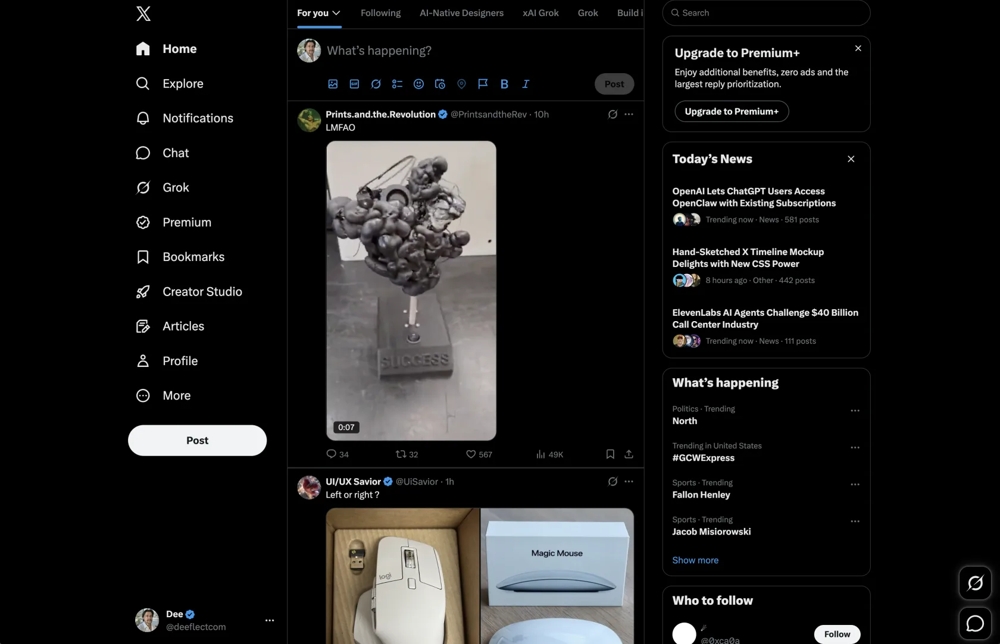
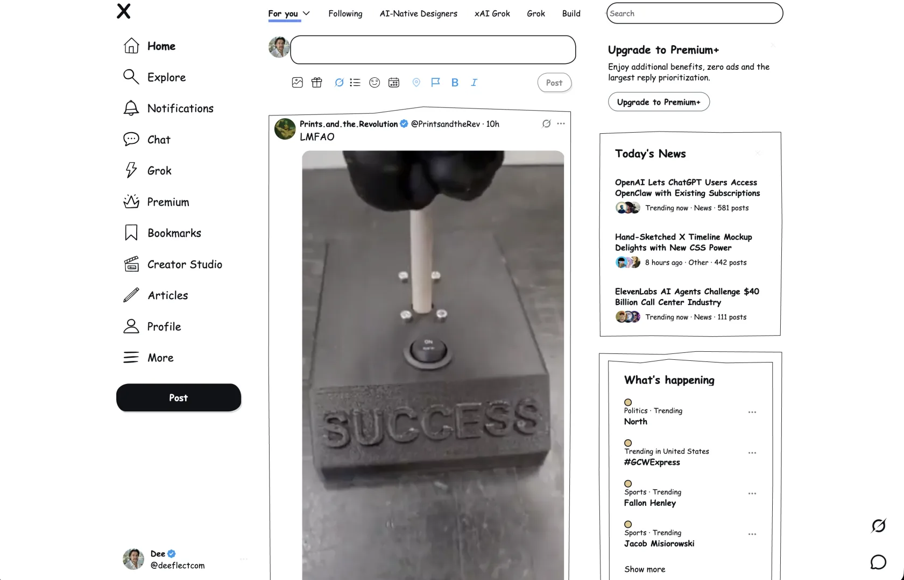

Before
Dense black panels. Microscopic icons. The faint smell of an algorithm. A productive environment for arguing with strangers and slowly losing your posture.
A Chrome extension. For X. Specifically.
Doodler paints over the timeline with paper, scribbled icons, Comic Sans, and wobbly borders. The posts remain. The visual oppression does not.


Scientific evidence. Peer review pending.
Dense black panels. Microscopic icons. The faint smell of an algorithm. A productive environment for arguing with strangers and slowly losing your posture.
Paper. Wobbly borders. Doodle icons. Buttons you can find without squinting. Still X. Just visibly unserious about it.
Install
The Chrome Web Store is the polite path. The ZIP is for manual install people, brave souls who already know what Developer mode is and have made peace with their decisions.
chrome://extensions, flip Developer mode on, and click Load unpacked.